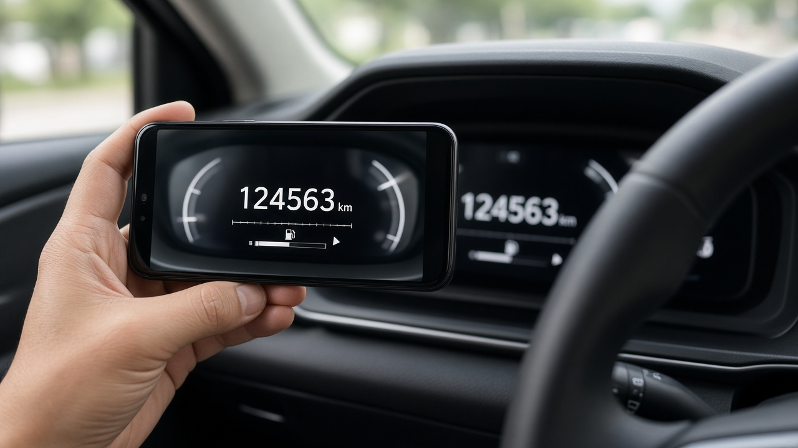

자동차보험 마일리지 특약 환급, 계기판 사진 기한 놓치면 특약이 사라져요 가입 직후와 만기 45일 전에 할 일

차를 주말에만 타거나 출퇴근을 대중교통으로 하는 분이라면 자동차보험 마일리지 특약으로 보험료 일부를 돌려받을 수 있어요. 그런데 막상 만기가 되면 사진을 언제 올려야 하는지, 왜 생각보다 환급금이 적은지 헷갈리는 경우가 많아요. 이 특약은 돈을 더 내는 게 아니라 정해진 때에 주행거리를 알려 주기만 하면 되는 구조라서, 기한만 지키면 손해 볼 일이 거의 없어요. 오늘은 금융감독원 자료와 주요 손해보험사 안내를 바탕으로 마일리지 특약에서 꼭 챙겨야 할 부분을 정리해 볼게요.
마일리지 특약은 덜 탄 만큼 만기에 돌려받는 구조예요
마일리지 특약은 1년 동안 달린 거리가 적을수록 보험료 일부를 보험기간이 끝난 뒤 돌려주는 특약이에요. 먼저 보험료를 다 내고, 만기 때 주행거리를 확인해서 해당 구간의 할인율만큼 환급받는 방식이라 후할인이라고도 불러요.
금융감독원은 2022년 4월 1일부터 이 특약을 원하는 사람만 고르는 방식에서 모든 계약자가 자동으로 가입되는 방식으로 바꿨어요. 원하지 않으면 가입하지 않겠다고 고를 수 있고, 정해진 기간 안에 주행거리 정보가 확인되지 않으면 특약은 자동으로 해지돼요.
금융감독원 자료를 보면 2020년 기준 특약 가입자 가운데 약 69퍼센트인 810만 명이 만기 뒤 평균 10만 7천 원 정도를 돌려받았어요. 약정한 거리보다 더 많이 달려도 추가로 내는 돈이나 불이익은 없다고 보험사들이 안내하고 있어요.
할인율은 보험사마다 구간부터 달라요
할인 구간과 비율은 회사마다 차이가 꽤 커요. 현대해상 다이렉트는 2026년 3월 21일 보험시작 계약부터 개인용 기준 연 1천 킬로미터 이하일 때 계기판 사진 방식 45.2퍼센트, 1만 킬로미터 이하 17.8퍼센트, 1만 8천 킬로미터 이하 2.2퍼센트를 안내하고 있어요.
KB손해보험은 2026년 4월 16일 보험시작 개인용 계약부터 사진 방식 기준으로 2천 킬로미터 이하 33.6에서 37.2퍼센트, 1만 킬로미터 이하 15.3에서 19.8퍼센트, 1만 5천 킬로미터 이하 3.0에서 8.2퍼센트로 안내해요. 가입 조건에 따라 할인율이 달라질 수 있다고 덧붙이고 있어요.
그래서 금융감독원도 전체 보험료 수준을 먼저 보고, 그다음 내 연간 주행거리에서 할인율이 높은 회사를 고르는 게 유리하다고 설명해요. 같은 9천 킬로미터를 달려도 회사의 구간 나누는 방식에 따라 적용되는 할인율이 달라질 수 있거든요. 작년 만기 때 계기판 숫자와 올해 숫자를 비교해 내 1년 주행거리를 먼저 알아 두면 비교가 훨씬 쉬워요.
사진은 가입할 때와 만기 때 두 번 올려야 해요
사진 방식이라면 차량 번호판이 보이는 사진 1장과 계기판 총 주행거리가 보이는 사진 1장, 이렇게 2장을 가입할 때와 끝날 때 각각 등록해야 해요. 현대해상은 총 주행거리인 ODO 숫자만 인정하고, 0으로 되돌린 구간 주행거리 화면은 안 된다고 안내해요. ODO는 차가 처음부터 지금까지 달린 전체 거리를 뜻해요.
가입할 때 제출 기한이 가장 중요해요. 현대해상 다이렉트는 보험개시일부터 30일 안에 사진을 올려야 하고, 기간 안에 올리지 않으면 특약이 무효가 되고 다시 가입되지 않는다고 안내해요. KB손해보험은 개시일 45일 전부터 개시일 뒤 15일 안에 등록하도록 하고 있어요. 금융감독원은 2022년 개정 때 이 기한을 최소 15일 이상으로 늘렸지만, 회사마다 기간이 다르니 가입 직후 바로 올리는 습관이 가장 안전해요.
만기 때는 두 회사 모두 만기 45일 전부터 만기 뒤 30일 안에 최종 사진을 등록하도록 안내하고 있어요. 현대, 기아, KG모빌리티의 커넥티드 서비스에 가입한 차라면 사진 대신 제조사 전산 조회로 주행거리를 확인하는 방식도 고를 수 있고, 할인율도 사진 방식보다 조금 높게 안내돼 있어요.
환급금이 생각보다 적은 이유는 계산식에 있어요
금융감독원이 소개한 민원 사례 가운데 실제로 달린 거리에 맞는 할인을 기대했는데 그보다 적게 나왔다는 내용이 있었어요. 이 특약의 연간 주행거리는 실제 달린 거리가 아니라 약관에 정한 계산식으로 1년치를 다시 셈한 값이기 때문이에요.
계산식은 마지막 누적 주행거리에서 처음 누적 주행거리를 뺀 값에, 365일을 두 사진을 확인한 날 사이의 날수로 나눈 값을 곱하는 방식이에요. 예를 들어 만기를 한참 앞두고 마지막 사진을 일찍 올리면, 짧은 기간에 달린 거리가 1년으로 늘려 계산돼서 실제보다 연간 거리가 길게 잡힐 수 있어요. 반대로 휴가철에 장거리를 몰아서 다녔다면 그 시기가 어디에 들어가느냐에 따라 결과가 달라지기도 해요.
금융감독원은 이런 차이 때문에 보험사 처리가 부당하다고 보기는 어렵다고 판단했어요. 할인 구간 경계에 걸려 있다면 사진을 올리는 날짜에 따라 환산 거리가 달라질 수 있다는 점을 알아 두면 좋아요.
보험사를 바꿀 때와 환급금 받는 방법
갱신하면서 보험사를 옮겨도 사진을 두 번 낼 필요는 없어요. 기존 보험사에 최종 주행거리 사진을 내서 정산을 마쳤다면 그 정보가 보험개발원에 모여 있어서 새 보험사가 자동으로 확인해요. 보험개발원에는 사진이 아니라 주행거리 숫자만 모인다고 해요. 반대로 기존 보험사에 정산을 안 하고 새 보험사에만 사진을 냈다면, 기존 보험사가 그 정보를 확인해서 환급해 주는 절차도 2022년 7월부터 마련됐어요.
환급금은 현대해상 다이렉트 기준으로 신용카드로 냈다면 환급금만큼 카드 결제가 부분 취소되고, 계좌이체로 냈다면 계약자 명의 계좌로 들어와요. 갱신할 때 새 보험료에서 환급금을 빼고 결제하는 대체 사용 특약도 있어요.
하나 더 기억할 점은 KB손해보험처럼 마일리지 특약과 승용차 요일제 특약을 함께 가입할 수 없는 회사도 있다는 거예요. 내 증권에 어떤 특약이 들어 있는지, 사진 등록이 끝났는지는 보험사 앱의 계약 조회에서 바로 확인할 수 있으니 이번 주에 한 번 열어 보시면 좋겠어요.
참고 자료 금융감독원 보도자료 자동차보험 마일리지 특약 변경 시행 2022년 3월 28일, 금융감독원 주요 민원 분쟁사례 2025년 2월, 현대해상 다이렉트 마일리지 할인특약 안내, KB손해보험 마일리지 할인 특약 안내
태그 자동차보험마일리지특약 마일리지특약환급 자동차보험할인 자동차보험특약 주행거리할인 계기판사진등록 자동차보험환급금 자동차보험갱신 커넥티드카할인 자동차보험료절약